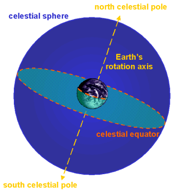

Used to describe the position of objects in the sky, the celestial sphere is a fictitious sphere centred on the Earth upon which all celestial bodies can be projected.
At any one time, an observer on the Earth’s surface can only see half of the celestial sphere since the other half lies below the horizon. Although the rotation of the Earth is constantly bringing new regions of the celestial sphere into view, unless the observer is located at the equator, there will always be part of the celestial sphere that remains hidden.

Due to the rotation of the Earth on its axis, the celestial sphere appears to rotate daily from east to west, and stars seem to follow circular trails around two points in the sky. These two points mark the intersection of the projection of the Earth’s rotation axis on the celestial sphere, and are called the celestial poles.
The point directly overhead the observer is called the zenith, and the line on the celestial sphere joining the observer’s zenith with the north and south celestial poles is the celestial meridian.
The projection of the Earth’s equator on the celestial sphere is called the celestial equator. Similarly the Earth’s coordinate system of longitude (meridians) and latitude (parallels) can be projected on the celestial sphere, giving rise to the celestial coordinates: right ascension and declination.